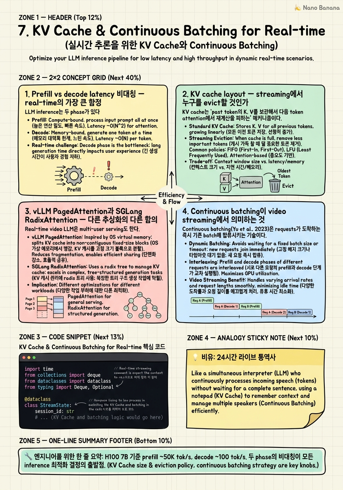

KV Cache & Continuous Batching for Real-time

🎯 학습 목표
- Prefill stage가 compute-bound이고 decode stage가 memory-bandwidth-bound인 비대칭을 정량적으로 설명할 수 있다
- Real-time video LLM에서 vision token이 매 frame 추가되는 게 KV cache layout에 미치는 영향을 분석할 수 있다
- Prefix-cache, sliding window, StreamingLLM의 attention sink 3가지 streaming KV 전략을 invariant 단위로 비교할 수 있다
- vLLM PagedAttention과 SGLang RadixAttention의 차이를 'block 할당 vs prefix tree' 구조로 설명할 수 있다
- Continuous batching이 streaming video LLM에서 multi-tenant serving에 어떻게 적용되는지 sketch할 수 있다
Chapter 5에서 visual encoder 최적화를, Chapter 6에서 token compression을 다뤘다. 이 모두는 'LLM에 들어가는 것을 줄이는' 방향이었다. 이 챕터는 LLM 자체의 inference latency를 다룬다. Streaming video LLM의 latency budget에서 LLM inference는 보통 50% 이상을 차지하고, 거의 모든 production system의 p99 spike가 여기서 나온다.
핵심 멘탈 모델 시프트: 일반 LLM 서빙에서는 '하나의 prompt를 받아 generate'가 unit of work였다. Hour-scale video LLM에서는 'video chunk와 user query를 받아 한 번 inference'가 unit이었다. Real-time에서는 video token이 *지속적으로 prefill에 추가되고*, response generation은 sparse 이벤트로 발생한다. 즉 prefill이 '한 번'이 아니라 *continuous stream*이다. KV cache 운영, batching 전략, speculative decoding 모두 이 사실을 받아들이고 다시 설계해야 한다.
vLLM PagedAttention, SGLang RadixAttention, TensorRT-LLM in-flight batching, StreamingLLM attention sink는 일반 LLM 서빙에서 등장한 기법이지만 모두 video streaming에 들어올 때 의미가 다시 평가된다. 이 챕터는 그 재평가를 다룬다.
핵심 내용
1. Prefill vs decode latency 비대칭 — real-time의 가장 큰 함정
LLM inference는 두 phase가 있다. Prefill: prompt 전체를 forward pass 한 번에 처리해 KV cache를 채운다. Compute-bound (matmul이 dominant). Decode: 한 token씩 autoregressive하게 생성. Memory-bandwidth-bound (KV cache load가 dominant). 일반 LLM 서빙에서는 prompt가 1K token이고 response가 500 token이면 prefill은 한 번, decode는 500번이다. 그래서 *decode optimization*이 traditional 관심사였다 (speculative decoding, FlashAttention 등).
Real-time video LLM은 반대다. 30 FPS로 visual token이 들어오면서 prefill이 매 frame 일어난다. Frame당 SigLIP 256 token, 1초당 30 frame = 7,680 vision token이 매 초 prefill되어야 한다. Response generation은 'user가 질문할 때만' 또는 'system이 proactive response를 trigger할 때만'이라 sparse하다. VideoLLM-online (Chen et al., CVPR 2024, arXiv:2406.11816)이 EOS-based stream alignment를 선택한 것도 이 비대칭 때문이다 — 매 frame마다 LLM이 'EOS인지 새 response 시작인지' 판단해서, response가 없으면 decode를 아예 안 한다.
이걸 숫자로 잡아보자. H100 기준 7B 모델, batch size 1.
| Phase | 처리량 | 256 vision token / frame 처리 시간 |
|---|---|---|
| Prefill | ~50K tok/s (compute-bound) | ~5 ms |
| Decode (1 token) | ~100 tok/s (memory-bandwidth) | ~10 ms / token |
30 FPS = 33ms budget이라면 vision prefill만 5ms로 충분하지만, 만약 매 frame response 5 token씩 decode하면 50ms로 이미 budget 초과. 그래서 real-time video LLM은 decode를 sparse하게 만들어야 한다. Inference 측 모든 결정이 이 제약을 만족시키는 방향으로 정렬된다.
2. KV cache layout — streaming에서 누구를 evict할 것인가
KV cache는 'past token의 K, V를 보관해서 다음 token attention에서 재계산을 피하는' 메커니즘이다. 일반 LLM에서는 prompt + 생성된 token의 K/V가 누적되고 generate 끝나면 release된다. 7B 모델, sequence length 8K 기준 KV cache는 ~2GB. 80GB H100이면 30-40 concurrent request까지 들어간다.
Real-time video LLM은 다르다. Stream이 끝나지 않는다. 1시간 라이브 방송이면 30 FPS × 256 token × 3600s = 27.6M vision token이 누적된다. 7B 모델 KV cache로 환산하면 ~7TB. H100에 안 들어간다. 그래서 KV cache eviction이 1급 problem이다. 세 가지 주류 전략.
(a) Sliding window KV cache (Mistral, Longformer). Window size W를 두고 가장 오래된 token의 K/V를 drop. Attention이 W token만 본다는 의미. 단순하고 빠르다. 단점: hard cutoff. Window 밖의 정보는 영영 못 본다.
(b) Prefix-cache (shared system prompt). System prompt와 task instruction은 매 streaming session에서 동일하므로 K/V를 *한 번만* 계산해서 reuse. vLLM의 prefix caching, SGLang의 RadixAttention이 이를 자동화한다. Streaming video에서는 'system prompt + task description + early video summary'가 share 가능. 효과: prefill의 첫 수백 token을 0 cost로 skip.
(c) StreamingLLM의 attention sink (Xiao et al., ICLR 2024, arXiv:2309.17453). Sliding window의 결정적 약점을 풀었다. Window를 그대로 운영하되 *맨 처음 몇 token*(보통 4개)의 K/V를 영구 보존. 왜? Softmax attention이 attention sink로 첫 token에 mass를 dumping하는 경향이 있어서, 이 token이 evict되면 perplexity가 폭발한다. 4 token만 살리면 infinite stream에서도 안정. 매우 단순하지만 streaming LLM의 standard가 됐다.
시니어 선택 포인트: streaming video LLM은 보통 (b)+(c) hybrid다. System prompt는 prefix-cache로 영구화, vision token stream은 sliding window + attention sink로 유한화. (a) 단독은 attention collapse 위험.
3. vLLM PagedAttention과 SGLang RadixAttention — 다른 추상화의 다른 함의
Real-time video LLM은 multi-user serving도 한다. 동시에 여러 stream을 받아 처리하는 inference engine의 선택이 latency 분포에 큰 영향을 준다. 두 주류 엔진.
vLLM PagedAttention (Kwon et al., SOSP 2023, arXiv:2309.06180). KV cache를 OS의 paging처럼 *block 단위*로 관리. 각 block은 16 token K/V. 한 request의 KV cache는 block table을 통해 *비연속 메모리*에 흩어져 저장 가능. 효과: (1) memory fragmentation 거의 0, (2) prefix-cache가 block 단위 reuse로 자동, (3) continuous batching에서 새 request가 들어올 때 free block만 잡으면 됨. Real-time video에 적용 시: vision token stream이 매 frame block table에 16 token씩 append된다. Block 단위라 sliding window eviction도 깔끔.
SGLang RadixAttention (Zheng et al., NeurIPS 2024, arXiv:2312.07104). Prefix-cache를 *radix tree*로 관리. 모든 request의 prompt prefix가 tree node로 표현되고, 공통 prefix는 자동 share. Effect: 'system prompt + user-specific instruction + video summary' 같은 nested prefix 구조에서 공유율이 극대화. Multi-tenant video LLM에서 사용자별 customization이 있어도 공통 부분이 다 share. 단점: tree node 관리 overhead. Real-time streaming에서 매 frame prefix가 바뀌는 패턴에는 PagedAttention 쪽이 더 자연스럽다.
TensorRT-LLM in-flight batching. NVIDIA 진영. 같은 batch에 *prefill request*와 *decode request*를 섞어 처리하는 fused kernel. Continuous batching의 변종이다. Streaming video LLM에서는 'prefill heavy + decode light' 워크로드라 prefill에 max-shape padding을 적용하면 GPU utilization이 떨어진다. TensorRT-LLM은 dynamic shape kernel로 이걸 풀어준다. p99 latency에 가장 강한 선택지로 평가받는다.
선택 가이드: 단일 stream low-latency → TensorRT-LLM. Multi-tenant with shared prefix → SGLang. 범용 + 빠른 prototyping → vLLM. Real-time video LLM에서는 보통 vLLM으로 시작해 production scale 들어가면 TensorRT-LLM으로 옮긴다.
4. Continuous batching이 video streaming에서 의미하는 것
Continuous batching(Yu et al., OSDI 2022, Orca 논문, arXiv:2306.10720)은 'request가 끝나기를 기다리지 않고 새 request를 batch에 끼워넣는' 기법이다. 일반 LLM 서빙에서는 throughput을 2-3배 올린다. Real-time video LLM에서는 throughput보다 latency tail 안정화가 더 중요한 효과다.
왜? 한 stream만 처리할 때 GPU utilization이 30-40%인 경우가 많다. Vision token 256개 prefill은 H100을 채우지 못한다. 다른 stream의 prefill을 같이 batch하면 utilization이 80%+로 올라간다. 그런데 *prefill batch는 compute-bound*라 batch size를 키워도 latency가 거의 안 늘어난다. 효과: 같은 p99 latency로 5-10배 많은 stream을 서빙.
그러나 함정이 있다. Decode와 prefill을 같은 batch에 넣으면 decode가 prefill 끝날 때까지 기다린다 — head-of-line blocking. Real-time video는 prefill heavy라 decode가 항상 뒤로 밀린다. 해결책 두 가지.
(1) Prefill/decode 분리 (disaggregated serving): DistServe(Zhong et al., OSDI 2024, arXiv:2401.09670)와 SplitWise(Patel et al., ISCA 2024) 패턴. Prefill 전용 GPU pool과 decode 전용 GPU pool을 분리. Streaming video LLM에 자연스럽다 — 매 frame prefill은 한 pool에서, 가끔 trigger되는 decode는 다른 pool에서. 단점: KV cache를 두 GPU 사이에 옮겨야 한다 (RDMA / NVLink).
(2) Chunked prefill (Sarathi, Agrawal et al., arXiv:2308.16369): 큰 prefill을 chunk로 나눠 decode와 interleave. 같은 GPU에서 prefill chunk → decode token → prefill chunk → ... 형태로 schedule. Streaming video LLM에서는 매 frame의 256 token prefill을 chunk로 더 자르고 decode와 섞을 수 있다. Disaggregation보다 구현이 단순하고 KV transfer cost 없음.
실전 추천: 단일 GPU / single-node는 chunked prefill, multi-node는 disaggregated. Production 시스템(Gemini Live 추정, GPT-4o Realtime API)은 후자로 평가된다.
5. Speculative decoding — response generation의 latency 줄이기
Speculative decoding(Leviathan et al., ICML 2023, arXiv:2211.17192)은 작은 draft model이 K token을 예측하고, 큰 target model이 한 번의 forward pass로 검증해서 reject되기 전까지 accept하는 기법이다. Decode phase의 wall-clock을 2-3배 줄인다.
Real-time video LLM에서 speculative decoding의 역할은 미묘하다. 앞 절에서 봤듯이 prefill이 dominant고 decode는 sparse하다. 그럼 speculative decoding은 의미가 적지 않을까? 정확히 그 반대다. Sparse decode는 더 latency-sensitive하다. User가 'what just happened?' 질문하면 system은 500ms 안에 응답해야 자연스럽다. 응답이 50 token이면 일반 decode로 500ms 걸린다. Speculative로 200ms로 줄이면 product UX가 달라진다.
Video LLM에서 speculative decoding 특화 패턴: draft model이 visual context-free일 수 있다. 즉 작은 LLaMA-1B 같은 draft가 vision token 없이 text token만 보고 response를 draft. Target model(LLaMA-7B Video)이 vision까지 보고 검증. 왜 가능한가? Response generation에서 다음 token은 대부분 grammatical / 문맥적 — vision은 가끔만 결정적이다. Reject rate가 30-40% 정도면 여전히 net win.
또 하나의 패턴: EAGLE-3 / Medusa 류의 *target-aware draft head*. 별도 draft model 없이 target model의 hidden state에서 multi-token 예측 head를 학습. 메모리는 더 들지만 reject rate가 낮아져 1.5-2x 더 빠르다. GPT-4o Realtime API가 이 방향으로 평가된다.
VideoLLM-online의 EOS-based stream alignment를 다시 보자. 매 frame 'EOS or not'을 결정하는 게 사실상 speculative decoding의 binary 변종이다. 'response를 generate해야 할 때만 decode를 시작'하는 게 sparse decode 패턴이고, 시작하면 speculative로 빠르게 끝낸다. 두 결정이 같은 latency budget logic에서 나온다.
💡 비유로 이해하기
국제회의장에 24시간 상주하는 라이브 통역사를 떠올려보자. 통역사가 하는 일은 두 가지다. (1) *Prefill*: 화자의 새 문장이 들어오면 머릿속에 의미를 채워 넣는다. 매 문장마다 일어난다. 듣는 데 시간 별로 안 걸린다. (2) *Decode*: 누군가 통역사에게 'now translate'라고 신호하면 그제서야 입을 열어 한 단어씩 말한다. 자주 일어나지 않지만 일어나면 한참 길다.
일반 LLM 서빙은 '회의가 한 번 열리고 통역하고 끝나는' 모델이다. 한 번 듣고 한 번 말한다. Hour-scale은 '6시간 강연을 다 들은 뒤 한 번 요약하는' 모델이다. Real-time video LLM은 24시간 라이브 통역사다. 듣는 건 끊임없이 일어나고 말하는 건 가끔 일어난다.
이제 KV cache는 통역사의 *기억력*이다. 24시간 다 기억할 수는 없다. 그래서 (a) 회의의 주제와 참가자 명단 같은 *반복되는 맥락*은 영구 기억(prefix-cache), (b) 최근 5분 대화는 정확히 기억(sliding window), (c) 회의 첫 인사말은 다른 사람이 다 잊어도 통역사는 살려둔다 — 'softmax attention sink'처럼 통역의 어조 baseline이 되기 때문(StreamingLLM의 sink token).
그리고 통역사가 여러 회의를 동시에 담당한다고 해보자. 회의 1에서 새 문장이 들어오는 동안, 회의 2에서 'translate' 신호가 왔다. 같은 뇌로 어떻게 처리하나? Continuous batching이다. 듣는 작업은 batch로 묶고, 말하는 작업은 흐름이 끊기지 않게 끼워 넣는다. Disaggregated serving은 한술 더 떠 듣는 통역사와 말하는 통역사를 따로 둔다. Speculative decoding은 통역사가 '다음 단어 후보 3개'를 미리 떠올려두는 기술이다 — 어차피 말할 거 미리 준비. 24시간 라이브 통역사의 모든 trick이 LLM inference에 그대로 매핑된다.
💻 코드 예시
Streaming video LLM의 inference 스케줄러 sketch. vLLM-style API 위에 'frame이 도착할 때마다 prefill을 enqueue하고, EOS-based stream alignment로 response decode를 sparse하게 trigger하는' 패턴. Prefix-cache + sliding window + attention sink hybrid.
import time
from collections import deque
from dataclasses import dataclass
from typing import Deque, Optional
@dataclass
class StreamState:
session_id: str
sink_tokens: int = 4 # StreamingLLM attention sink
window_size: int = 8192 # sliding KV window
prefix_kv_handle: Optional[str] = None # cached system+task prefix
vision_buffer: Deque[int] = None # token ids in current window
pending_decode: bool = False
class StreamingLLMScheduler:
def __init__(self, engine, prefix_text: str):
self.engine = engine # vLLM/SGLang style
# Materialize system+task prefix once; reused per session.
self.shared_prefix_kv = engine.prefill_and_cache(prefix_text)
self.streams: dict[str, StreamState] = {}
def open_stream(self, sid: str) -> StreamState:
s = StreamState(session_id=sid,
prefix_kv_handle=self.shared_prefix_kv,
vision_buffer=deque())
self.streams[sid] = s
return s
def on_frame(self, sid: str, vision_tokens: list[int]):
s = self.streams[sid]
# 1) Append new vision tokens to window; preserve sink tokens.
s.vision_buffer.extend(vision_tokens)
evict_n = max(0, len(s.vision_buffer) - s.window_size + s.sink_tokens)
for _ in range(evict_n):
# Sink tokens (oldest s.sink_tokens) are protected by index logic
# inside engine; here we just trim the application-side window.
s.vision_buffer.popleft()
# 2) Incremental prefill: only the *new* tokens go through compute.
self.engine.prefill_incremental(
session_id=sid,
prefix=s.prefix_kv_handle,
new_tokens=vision_tokens,
sink_n=s.sink_tokens)
# 3) EOS-aligned probe: cheap forward to check if response should start.
logit = self.engine.peek_next_logit(sid)
if logit.argmax() != self.engine.eos_id:
s.pending_decode = True
def maybe_decode(self, sid: str, max_tokens: int = 64) -> Optional[str]:
s = self.streams[sid]
if not s.pending_decode:
return None
# Speculative decode: small draft proposes K, target verifies in 1 pass.
text = self.engine.speculative_decode(
sid, max_tokens=max_tokens, draft_k=4)
s.pending_decode = False
return text네 가지 streaming-specific 결정이 코드에 담겨 있다. (1) shared_prefix_kv: system + task prompt를 한 번만 prefill하고 모든 session이 share. vLLM PagedAttention의 block 공유 / SGLang radix tree의 핵심 ROI. (2) on_frame의 sliding window + sink: 가장 오래된 vision token부터 evict하되 *맨 앞 sink_tokens 개*는 항상 보존 — StreamingLLM의 attention sink 패턴 그대로. (3) prefill_incremental: 새로 들어온 vision token만 forward pass — vLLM의 incremental prefill이 자동으로 처리. *이전 frame의 prefill을 재활용*하기 때문에 256 token만 compute. (4) maybe_decode의 EOS-aligned probe: VideoLLM-online이 도입한 'response를 generate할지 EOS로 끝낼지'를 매 frame logit 한 번 보고 결정. Decode를 sparse하게 만드는 핵심 트릭. 그리고 decode가 trigger되면 speculative로 wall-clock을 줄인다. 이 4개를 합치면 30 FPS에서 33ms budget 안에 prefill + EOS probe + (sparse) decode를 다 끼워 넣는다.
🏭 현업에서의 평가
✅ 시니어가 보는 것
- Prefill compute-bound / decode memory-bandwidth-bound를 즉석에서 수치로 정당화
- Real-time video LLM에서 prefill이 'continuous stream'이고 decode가 'sparse event'라는 워크로드 인식
- Prefix-cache + sliding window + attention sink hybrid를 단일 buffer가 아닌 *역할 분리된 3개 메커니즘*으로 다룸
- Disaggregated vs chunked prefill의 선택을 KV transfer cost와 GPU pool 수로 정당화
- Speculative decoding을 'sparse decode일수록 가치 큼'으로 역설명할 수 있음
⚠️ 레드 플래그
- KV cache eviction을 단순 sliding window로만 풀고 attention sink 없이 운영
- prefill latency를 무시하고 decode 최적화(speculative, FlashAttention)만 강조
- vLLM/SGLang/TensorRT-LLM을 'throughput 좋은 것 하나 고르면 된다'고 답함
- continuous batching이 head-of-line blocking을 만들 수 있다는 사실을 모름
- StreamingLLM의 4 token sink를 '그냥 마법의 trick'으로 보고 softmax attention sink 메커니즘 설명 못 함
🎤 예상 인터뷰 질문
- **Q1. Streaming KV cache 전략 비교.** 30 FPS로 24시간 라이브 비디오 LLM을 운영한다. Sliding window only, prefix-cache + sliding window, StreamingLLM attention sink + prefix-cache 3가지 전략 중 1년 안정 운영을 위해 어떤 hybrid를 고를지, 각 실패 시나리오로 정당화하라.
- **Q2. Disaggregated vs chunked prefill.** Single-GPU / single-node 환경과 multi-node 환경에서 두 전략 중 어느 쪽을 골라야 하는지, KV cache transfer cost와 GPU pool 분할의 tradeoff로 답하라. Streaming video LLM에서 chunked prefill이 disaggregation보다 자주 채택되는 이유는?
- **Q3. Speculative decoding in video LLM.** Decode가 sparse한 video LLM에서 speculative decoding이 *더* 가치 있다는 주장의 근거는? Draft model을 vision-context-free 작은 LLM으로 골라도 되는 이유와 reject rate 30-40%가 net win인 계산을 보여라.
✨ 핵심 요약
Prefill compute-bound, decode memory-bandwidth-bound
H100 7B 기준 prefill ~50K tok/s, decode ~100 tok/s. 두 phase의 비대칭이 모든 inference 최적화 결정의 출발점.
Real-time video LLM은 prefill heavy + decode sparse 워크로드다
매 frame 256 vision token이 prefill되고, response는 user trigger 또는 EOS-based proactive trigger 시점에만 decode. 일반 LLM 서빙과 정반대 워크로드.
StreamingLLM의 attention sink는 softmax 구조 때문에 필요하다
Sliding window가 sink token (보통 첫 4개) 없이 운영되면 attention mass dumping 대상이 사라져 perplexity 폭발. ICLR 2024, arXiv:2309.17453.
Production은 prefix-cache + sliding window + attention sink hybrid
단일 메커니즘이 아니다. System prompt는 prefix-cache로 영구화, vision stream은 sliding window로 유한화, sink token으로 attention 안정화.
vLLM PagedAttention은 block 단위 KV 관리로 fragmentation을 제거한다
OS paging metaphor. Vision token stream에 자연스러움. SOSP 2023, arXiv:2309.06180.
SGLang RadixAttention은 multi-tenant shared prefix에 강하다
Prefix tree로 nested prefix 공유 자동화. Multi-user video LLM에서 system+task+user 계층 prefix 효율적. arXiv:2312.07104.
Continuous batching은 head-of-line blocking을 조심해야 한다
Prefill batch에 decode를 섞으면 decode가 prefill을 기다린다. Disaggregated serving(DistServe) 또는 chunked prefill(Sarathi)로 해결.
Speculative decoding은 sparse decode일수록 가치가 크다
Real-time UX는 500ms 응답 vs 200ms 응답 차이가 결정적. EAGLE/Medusa 같은 target-aware draft head가 production 추세. Decode를 sparse하게 만드는 EOS-based alignment와 함께 작동.